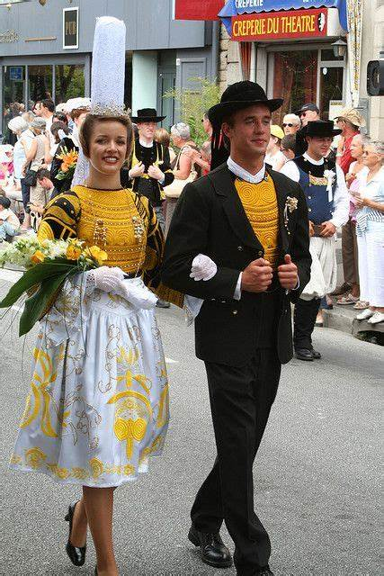

Festoù-noz
Les festoù-noz (ou fêtes de nuit ) sont des rassemblements traditionnels où les Bretons dansent au son de la musique traditionnelle.

Costumes traditionnels
Les costumes bretons sont variés et colorés, souvent ornés de broderies complexes. Chaque région a ses propres styles et traditions vestimentaires.
